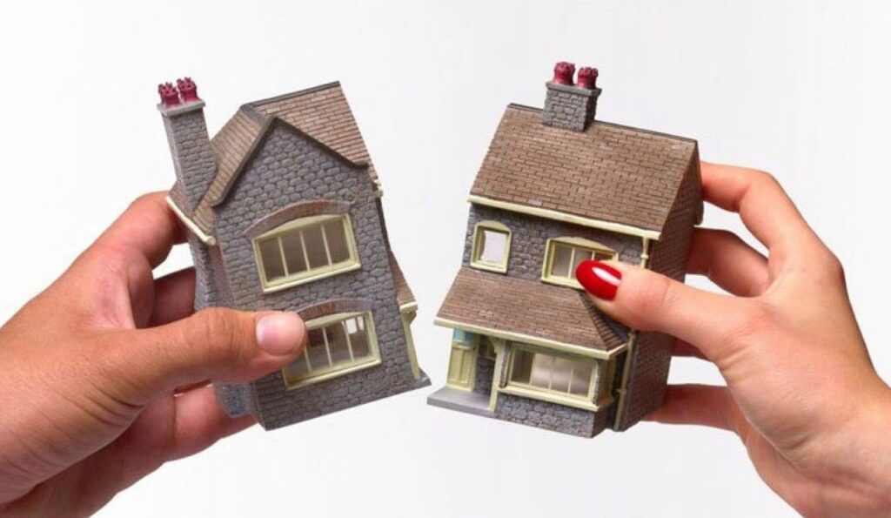

Miras Hukuku
Miras hukuku, gerçek kişinin ölümü veya gaipliği halinde, bu kişinin mal varlığının yani terekesinin Türk Medeni Kanunun öngördüğü şekilde, kimlere ve nasıl intikal edeceğini düzenleyen hukuk dalıdır. Muris yani miras bırakanın mirasçılara intikal edebilen mal varlığına tereke denir.
Mirastan mal kaçırma (muris muvazaası), mirasta saklı pay ve mal paylaşımı, tenkis davası, vasiyetnamenin düzenlenmesi ve iptali, mirasın reddi vb. gibi miras hukuku sorunları sıklıkla yaşanmaktadır. Miras hukuku sorunlarını çözüme kavuşturan avukatlara halk arasında miras avukatı denilmektedir. Avukat Gülümser Şimşek, miras davaları ve miras hukuku ile ilgili diğer sorunların çözümü için hukuki yardım sunmaktadır.